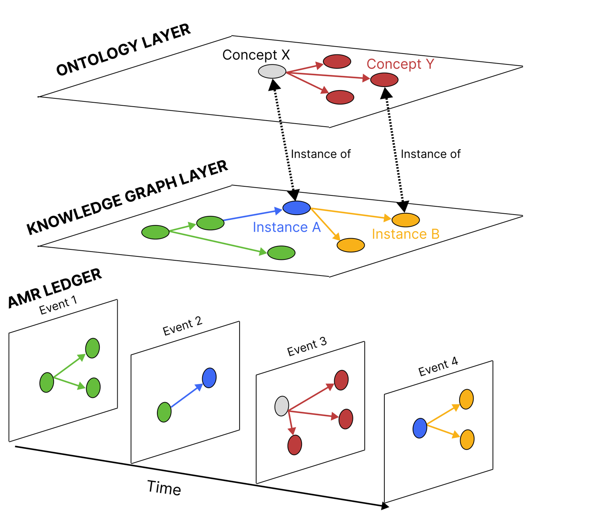

// Research · EMNLP 2026 · AKBC Workshop
Knowledge State Protocol: HTTP for Meaning
Knowledge graphs store facts, but not what those facts are or how they change. KSP brings three standard knowledge representations together so a system can reason across concepts, facts, and time.
01 Why: one sentence, many layers of meaning
Large language models answer questions well, but what they know is hard to inspect, attribute, or update. In enterprise and specialized settings, much of the knowledge that matters is also private, domain-specific, or changing, so the model never saw it during training. A common fix is to retrieve from an external knowledge base, and knowledge-graph RAG goes a step further than plain text retrieval by storing entities and their relations explicitly.
But a knowledge graph captures only part of what a text means. Its subject–relation–object triples hold the facts that were stated, and two kinds of context keep falling through:
- Conceptual context: "X is a type of Y." A question about a concept fails when that concept never appears in the data.
- Temporal context: "A happened before B, and changed C." A graph of the current state forgets how it got there.
Recent systems patch these gaps one at a time, adding timestamps here and ontology concepts there, or they re-encode everything into a custom graph schema built for one domain.
| What language does | Best-fit representation | Why |
|---|---|---|
| Refers to entities and facts | Knowledge graph | Durable, extensible memory of who and what. |
| Composes events (who did what to whom) | AMR | Explicit predicate–argument structure, negation, and scope. |
| Abstracts into classes, roles, rules | Ontology | Inheritance, constraints, and generalization. |
| Talks about time and change | AMR event ledger | An ordered history of events that update the facts. |
| Separates claims from facts | Ontology | Treats sources and evidence as first-class concepts. |
Simplified from Table 1 of the paper.
02 What: a protocol that coordinates three layers
KSP coordinates three existing representations, one for each layer of meaning. HTTP standardizes how systems talk to each other without dictating how each one stores its data. In the same way, KSP defines the shared primitives and mappings between representations without prescribing what goes on inside them.
Concepts
Domain concepts, roles, and the constraints between them.
“What kind of thing is this?”Instances
Concrete entities and the facts that connect them.
“What is true right now?”Time
Each sentence-level event, parsed into AMR and stored in order.
“What happened, and what did it change?”How the layers connect
- One shared primitive. Every layer represents objects as nodes, so a node in one layer can be aligned with its counterpart in another.
- Concepts ↔ instances. KG entities are linked to ontology concepts by instance-of edges. A question about a concept that never appears in the text can travel up through the ontology and back down to concrete entities.
- Events → state. Each AMR event is anchored to the KG entities it mentions, and its predicate becomes a graph operation. Replaying the ledger forward or backward rebuilds the knowledge state at any point in time, much like version control.

03 See it work: follow a question through the layers
Take a small example from finance. The source text describes four events:
- Banco do Brasil issues a loan to Transnet.
- Standard Bank guarantees the loan.
- Transnet misses a payment, and the loan enters default.
- As a result, the interest rate rises from SOFR + 2% to SOFR + 5%, and the exposure is reclassified from performing to non-performing.
Below, that scenario is stored in all three KSP layers. Click a question to watch KSP answer it. The reasoning path lights up across the layers one step at a time, and each step is listed beside the view. Temporal questions replay the ledger, so watch the knowledge-state date move forward and a new Default_001 node appear.